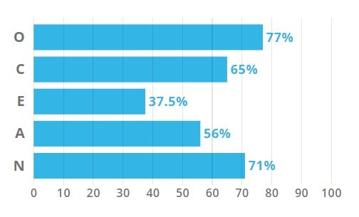
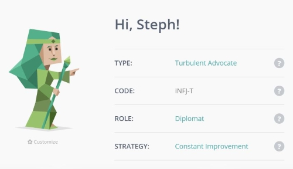
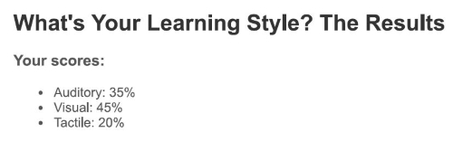

MY PROFILE
Upon completeing the three different style personality tests, the results proved to be quite interesting as I would not have necessarily agreed with all the definitions. From the results of the Myers-Briggs style personality test I completed through 16personalities it identified me as being a Turbulent Advocate (INFJ-T). This personality type is described as a rare type and is highlighted by a sense of idealism and morality. Along with this it defines the individual as being able to make solid goals and lasting impact. This was an interesting outcome to me as I would not have agreed that I am very good at making steps to achieve my goals, but what I did find interesting is that this type of person is also defined as strong-willed with strong opinions which I would tend to agree with.
The online learning test I completed was quite different to the first test as I found it quite accurate to what I believed was my learning style. The result reflected that I was mostly a visual learner with some auditory learning. This I can strongly agree with as I find it easier to pick things up by seeing how it is done through demonstration or watching tutorials. I believe that this learning style is a positive in terms of an online learning environment as a lot of the learning in these types of courses are done through webinars and video tutorials.
The last of the tests I completed was the Big Five personality test. This test was a bit more simplified to the 16personalities test and used 5 personality traits to characterize an individual. From the results it concluded that I tend to be more creative, intellectual, and adventurous. This has proved correct in some ways as I have previously studied fashion and focused on more artistic and adventurous areas during school and university. The results seemed to align with the 16personalities test in that it also put me on the less extroverted end of the scale, this I tend to agree with too as I am not as social as some of my extroverted peers.
When working with a team I think that these results show that I would be more of a hands-on learner and would prefer to discuss and collaborate either in person or over video. A positive trait that has come from these results is the ability to be open minded which would help to explore more abstract and creative ideas when brainstorming as a team. I also believe that having a higher level of conscientiousness is helpful as it defines the person as being more determined and organized. This could be beneficial in situations when others may need some support.
Some drawbacks from the results was that some of the personality types I had been categorized as tend to more neurotic and turbulent. The turbulent element to the 16 personality results suggests that the individual is more inclined to be sensitive and vulnerable to criticism along with being a perfectionist. Further to this, the neurotic aspect to the Big Five test shows that there is potential to be more anxious and negative. These traits might be potentially damaging in a team as it may affect how others approach you if they are worried about your reaction. I believe the best way to address this is to be more self-aware of your responses and ensure that people do not feel worried about the emotional response they may receive from you. Though these can be negatives, I think there are a lot of positive elements to the results which could help to managing a team well and being empathetic to others.


